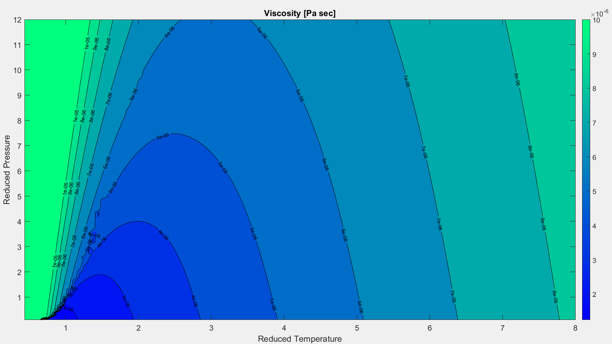

Transport Properties
The equations of state discussed in the previous sections enabled us to calculate the thermodynamic properties of hydrogen, oxygen, and their associated combustion products. We now direct our attention to the transport properties of these propellants. Transport properties describe how a fluid disperses energy. There are two properties of interest: thermal conductivity and viscosity. Thermal conductivity describes a fluid’s ability to transfer heat via conduction. Viscosity represents the fluid’s response to shear stress and the resulting transfer of momentum.
Once again the model must be divided into two regimes: a low temperature regime for liquid propellants, and a high temperature regime for combustion gasses.
Liquid Hydrogen Thermal Conductivity
The liquid hydrogen thermal conductivity model is split into three terms: the dilute gas component $\lambda_0$, the “excess” conductivity $\Delta\lambda$, and the critical enhancement $\Delta\lambda_c$. The dilute gas component is a theoretical construct representing the thermal conductivity of the fluid at zero density. The excess conductivity term takes into account effects of variable density. At times, the excess component and the dilute gas component are bundled together in a term known as the “background” conductivity.[32] The critical enhancement takes into account density fluctuations occurring near the critical point that lead to a singularity in the thermal conductivity field. Equations for all three terms are listed below.[33]
$C_1=6.24\times10^{-4}$
$C_2=-2.58\times10^{-7}$
$C_3=0.837$
$T_c= 32.938 K $
$\rho_c= 31.323 \frac{kg}{m^3}$
$\Delta\rho_c=\frac{\rho}{\rho_c}-1$
$\Delta T_c=\frac{T}{T_c}-1$
Coefficients for these equations are listed in the following table.
| i | $A_1$ | $A_2$ | $B_1$ | $B_2$ |
|---|---|---|---|---|
| 0 | -1.24500E+00 | 1.42304E+04 | 2.65975E-02 | -1.21727E-03 |
| 1 | 3.10212E+02 | -1.93922E+04 | -1.33826E-03 | 3.66663E-03 |
| 2 | -3.31004E+02 | 1.58379E+04 | 1.30219E-02 | 3.88715E-03 |
| 3 | 2.46016E+02 | -4.81812E+03 | -5.67678E-03 | -9.21055E-03 |
| 4 | -6.57810E+01 | 7.28639E+02 | -9.23380E-05 | 4.00723E-03 |
| 5 | 1.08260E+01 | -3.57365E+01 | - | - |
| 6 | -5.19659E-01 | 1.00000E+00 | - | - |
| 7 | 1.439790E-02 | - | - | - |
| i | $A_1$ | $A_2$ | $B_1$ | $B_2$ |
|---|---|---|---|---|
| 0 | -3.40976E-01 | 1.38497E+02 | 3.63081E-02 | 1.83370E-03 |
| 1 | 4.58820E+00 | -2.21878E+01 | -2.07629E-02 | -8.86716E-03 |
| 2 | -1.45080E+00 | 4.57151E+00 | 3.14810E-02 | 1.58260E-02 |
| 3 | 3.26394E-01 | 1.00000E+00 | -1.43097E-02 | -1.06283E-02 |
| 4 | 3.16939E-03 | - | 1.74980E-03 | 2.80673E-03 |
| 5 | 1.90592E-04 | - | - | - |
| 6 | -1.13900E-06 | - | - | - |
Table 2.6.1
Equations 2.6.2 and 2.6.3 present a challenge. Both of these equations are functions of density. It is fairly straight forward to measure the temperature and pressure of liquid hydrogen flowing through a rocket engine. Just attach a thermocouple and pressure transducer to a pipeline and the collect the data. But there is no simple instrumentation available to measure density. Instead, density must be calculated from an equation of state using a measured temperature and pressure. This can be accomplished using the Helmholtz correlation discussed in Section 2.2.
The final hurdle to overcome is the question posed by the two sets of coefficients in Table 2.6.1. Should we use the data for parahydrogen or normal hydrogen? It is important to note that “normal” hydrogen is actually a mixture consisting of 75% orthohydrogen and 25% parahydrogen. This composition varies as a function of temperature (see Figure 2.2.8) There are really two issues at hand. First, we need to determine the conductivity of orthohydrogen at the desired temperature and pressure. Second, we need to calculate the overall conductivity of the mixture, taking in to account that the para/ortho composition is a function of temperature.
The first issue is resolved by performing the thermal conductivity calculation utilizing both sets of coefficients in Table 2.6.1 to solve for $\lambda_{norm}$ and $\lambda_{para}$. The next step is to solve for $\lambda_{ortho}$ with Equation 2.6.5:
Now the total conductivity of the mixture can be determined by taking in to account ortho/para composition at the desired temperature:
The variable $X$ represents the fraction of parahydrogen in the mixture, as shown in Figure 2.2.8. These equations allow the thermal conductivity surface to be calculated. The model is accurate for temperatures up to 1000 K and pressures up to 100 MPa. The figure below plots thermal conductivity as a function of reduced pressure and reduced temperature.
Figure 2.6.1
There are two interesting items to note on Figure 2.6.1. First, the model does not perform particularly well near the critical point where $\text{P}_r=1$ and $\text{T}_r =1$. In fact, the model diverges along the critical temperature isotherm. This is an inherent feature of the model.[33] Secondly, since this model relies on a density calculation performed with the Helmholtz equation of state (see Section 2.2), it introduces turbulence along the saturation and pseudo-boiling lines. This turbulence is visible in Figure 2.6.1 in the region where reduced temperature is between 1 and 1.5. This is a known problem with equations of state that rely on root finding schemes based on temperature and pressure inputs, especially in areas like the pseudo-boiling region where thermodynamic properties exhibit large rates of change.[34] Fortunately, the vast majority of the thermal conductivity calculations required for this model of the SSME occur at reduced pressures of 25 to 30, far above the turbulent region.
Liquid Hydrogen Viscosity
The liquid hydrogen viscosity model is split into similar terms as the thermal conductivity model. A dilute gas component, $\eta_0$ corresponds to conductivity at the low density limit. The excess viscosity, $\Delta\eta$, accounts for the effects of variable density. At low densities, the excess viscosity is independent of temperature. The total viscosity is the sum of the dilute gas and excess components. This correlation does not include a critical enhancement.[35]
The coefficients $A$ and $B$ are described by the following equations:
This correlation is again a function of density, which must be input with units of $g/cm^3$. The resulting viscosity is then output with units of $Pa \cdot sec$. As was the case for thermal conductivity, and equation of state must be used to determine density for input into Equations 2.6.8 and 2.6.9. The resulting viscosity surface again contains turbulence along the pseudo-boiling line due to instability with the root finding algorithm used in this region.

Figure 2.6.2
Combustion Gas Transport Properties
Transport properties of the high-temperature gasses produced in the SSME pre-burners and main combustion chamber are modeled with empirical curve fits. The equations take the following form:
Once again, the coefficients for these curve fits come from data tabulated in NASA Technical Memorandum 4513.[16] Temperature is entered in kelvin. Viscosity is output in units of micropoise, and thermal conductivity in microwatts per centimeter kelvin. Each property has two sets of coefficients, one for temperatures less than 1000 K and one set for temperatures greater than 1000 K.
| Viscosity $\left(\mu P\right)$ | ||||
|---|---|---|---|---|
| A | B | C | D | |
| T < 1000 | 7.4553182E-01 | 4.3555109E+01 | -3.2579340E+03 | 1.3556243E-01 |
| T > 1000 | 9.6730605E-01 | 6.7931897E+02 | -2.1025179E+05 | -1.8251697E+00 |
| Viscosity $\left(\mu P\right)$ | ||||
|---|---|---|---|---|
| A | B | C | D | |
| T < 1000 | 6.0916180E-01 | -5.2244847E+01 | -5.9974009E+02 | 2.0410801E+00 |
| T > 1000 | 7.2216486E-01 | 1.7550839E+02 | -5.7974816E+04 | 1.0901044E+00 |
| Viscosity $\left(\mu P\right)$ | ||||
|---|---|---|---|---|
| A | B | C | D | |
| T < 1000 | 5.0019557E-01 | -6.9712796E+02 | 8.8163892E+04 | 3.0836508E+00 |
| T > 1000 | 5.8988538E-01 | -5.3769814E+02 | 5.4263513E+04 | 2.3386375E+00 |
| Viscosity $\left(\mu P\right)$ | ||||
|---|---|---|---|---|
| A | B | C | D | |
| T < 1000 | 5.9711536E-01 | -4.6100678E+02 | 3.7606286E+04 | 2.4041761E+00 |
| T > 1000 | 6.4287721E-01 | -1.8173747E+02 | -8.8543767E+04 | 1.9636057E+00 |
| Viscosity $\left(\mu P\right)$ | ||||
|---|---|---|---|---|
| A | B | C | D | |
| T < 1000 | 7.4226149E-01 | -4.0132865E+02 | 1.8554165E+05 | 4.6741844E-02 |
| T > 1000 | 8.7486623E-01 | -2.5022902E+03 | 7.0955048E+06 | -9.3888455E-01 |
| Viscosity $\left(\mu P\right)$ | ||||
|---|---|---|---|---|
| A | B | C | D | |
| T < 1000 | 7.7269241E-01 | 8.3842977E+01 | -5.8502098E+04 | 8.5100827E-01 |
| T > 1000 | 8.7669586E-01 | 1.0158420E+03 | -1.0884566E+06 | -1.8001077E-01 |
Table 2.6.2: Viscosity Coefficients
| Thermal Conductivity $\mu W / cm \cdot\,K$ | ||||
|---|---|---|---|---|
| A | B | C | D | |
| T < 1000 | 1.0059461E+00 | 2.7951262E+02 | -2.9792018E+04 | 1.1996252E+00 |
| T > 1000 | 1.0582450E+00 | 2.4875372E+02 | 1.1736907E+04 | 8.2758695E-01 |
| Thermal Conductivity $\mu W / cm \cdot\,K$ | ||||
|---|---|---|---|---|
| A | B | C | D | |
| T < 1000 | 7.7229167E-01 | 6.8463210E+00 | -5.8933377E+03 | 1.2210365E+00 |
| T > 1000 | 9.0917351E-01 | 2.9124182E+02 | -7.9650171E+04 | 6.4851631E-02 |
| Thermal Conductivity $\mu W / cm \cdot\,K$ | ||||
|---|---|---|---|---|
| A | B | C | D | |
| T < 1000 | 1.0966389E+00 | -5.5513429E+02 | 1.0623408E+05 | -2.4664550E-01 |
| T > 1000 | 3.9367933E-01 | -2.2524226E+03 | 6.1217458E+05 | 5.8011317E+00 |
| Thermal Conductivity $\mu W / cm \cdot\,K$ | ||||
|---|---|---|---|---|
| A | B | C | D | |
| T < 1000 | 6.8627561E-01 | -7.4033274E+02 | 2.7559033E+04 | 2.8308741E+00 |
| T > 1000 | -4.7918112E-01 | -9.3769908E+03 | 7.0509952E+06 | 1.4203688E+01 |
| Thermal Conductivity $\mu W / cm \cdot\,K$ | ||||
|---|---|---|---|---|
| A | B | C | D | |
| T < 1000 | 7.4166119E-01 | -4.0487203E+02 | 1.8775642E+05 | 3.4843121E+00 |
| T > 1000 | 8.7447639E-01 | -2.5089452E+03 | 7.1081294E+06 | 2.4970991E+00 |
| Thermal Conductivity $\mu W / cm \cdot\,K$ | ||||
|---|---|---|---|---|
| A | B | C | D | |
| T < 1000 | 7.7271664E-01 | 8.3989100E+01 | -5.8580966E+04 | 1.5179900E+00 |
| T > 1000 | 8.7676666E-01 | 1.0170744E+03 | -1.0906690E+06 | 4.8644232E-01 |
Table 2.6.3: Thermal Conductivity Coefficients
Equations 2.6.12 and 2.6.13 enable calculation of the transport properties of the individual species listed in the above tables. But the gas produced in the SSME pre-burners and main combustion chamber consists of a mixture of all these species. The model must be adjusted to account for the resulting composition. In the case of thermodynamic properties calculated in Section 2.4, a simple mixture rule is utilized where the properties are weighted according to mole fraction alone. A slightly more complex model is required for the transport properties:[36]
In the above equations, $M$ is the molecular mass of an individual species. This model of the SSME utilizes the six species listed in Tables 2.6.2 and 2.6.3, hence the summations on $i$ and $j$ go up to six. The variable $x$ represents the mole fraction of each individual species within the overall gas mixture. Mole fractions are calculated utilizing the combustion model presented in Section 3.
Figures 2.6.4 and 2.6.5 plot the thermal conductivity and viscosity of the SSME exhaust as a function of axial position in the main combustion chamber and rocket nozzle. As expected, the transport properties mirror the trend displayed by the exhaust temperature, as shown in Figure 2.6.3. Properties are the highest in the main combustion chamber where temperatures reach approximately 3600 K. Exhaust temperature rapidly decreases along the length of the nozzle. Transport properties follow this trend.

Figure 2.6.3: Exhaust Temperature Profile
Figure 2.6.4: Thermal Conductivity Profile
Figure 2.6.5 Viscosity Profile
As a final note, this model assumes the exhaust flow is “frozen.” This means that exhaust composition is fixed in the combustion chamber. Mole fractions are assumed to remain constant as the gas flows through the nozzle. In reality, the exhaust composition changes as a function of temperature and pressure due to the individual species recombining via chemical reactions. A flow like this is described as an “equilibrium” flow. If the exhaust temperature profile shown in Figure 2.6.3 included the effects of chemical equilibrium, temperatures and transport properties would slightly higher than what is currently shown.[17]